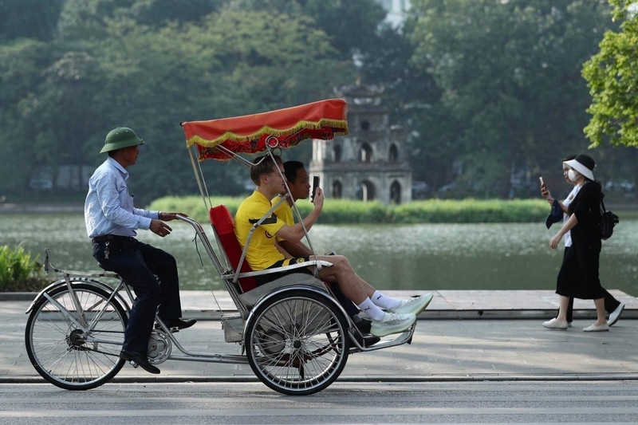
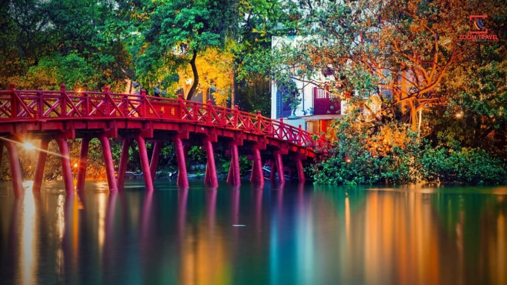
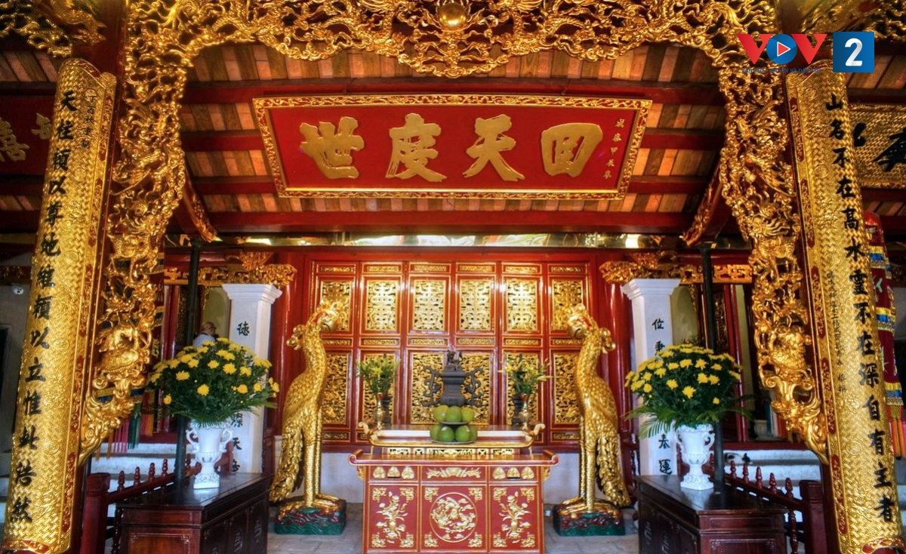
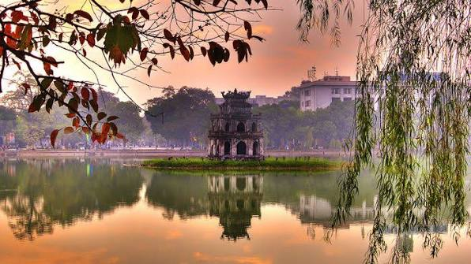
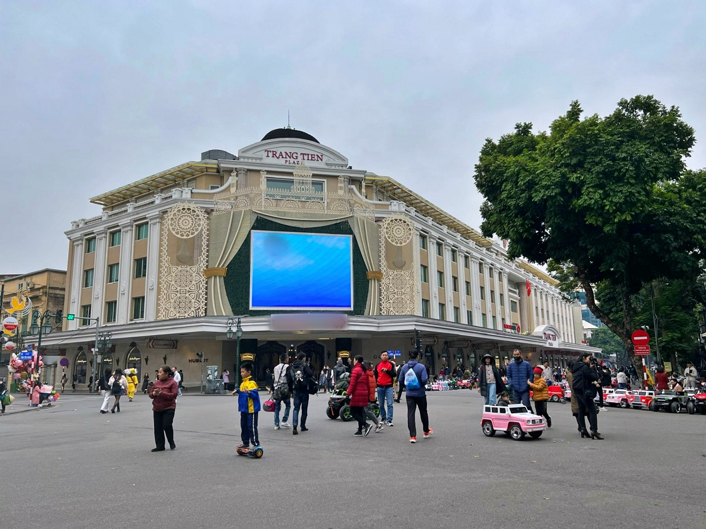
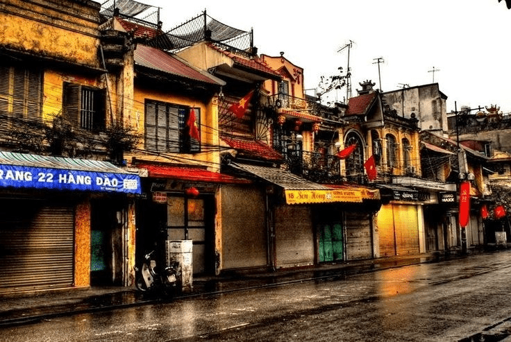
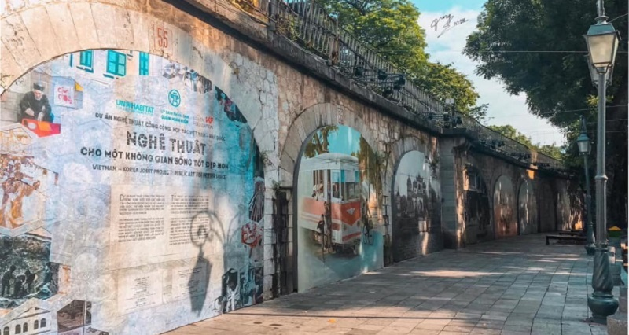

Giới Thiệu Tour
Hồ Hoàn Kiếm là biểu tượng nổi bật của Hà Nội, nơi lưu giữ vẻ đẹp cổ kính, nhẹ nhàng và rất riêng của thủ đô nghìn năm văn hiến.
Tour Hồ Hoàn Kiếm Cổ Kính 1 ngày đưa du khách khám phá Đền Ngọc Sơn, cầu Thê Húc, Tháp Rùa, phố đi bộ, phố cổ Hà Nội và các món ăn đặc trưng.
Điểm Nổi Bật

Dạo Quanh Hồ Hoàn Kiếm
Tận hưởng không gian xanh mát, yên bình ngay giữa trung tâm Hà Nội.

Cầu Thê Húc Đỏ Son
Check-in cây cầu biểu tượng dẫn vào Đền Ngọc Sơn với sắc đỏ nổi bật.

Đền Ngọc Sơn
Khám phá công trình văn hóa cổ kính gắn liền với lịch sử Hà Nội.

Tháp Rùa Trầm Mặc
Ngắm biểu tượng thân thuộc nằm giữa mặt hồ xanh, đẹp nhất lúc chiều muộn.

Phố Đi Bộ Hồ Gươm
Cảm nhận nhịp sống trẻ trung và nhiều hoạt động đường phố thú vị.

Phố Cổ Hà Nội
Dạo qua những con phố nhỏ, nhà cổ, hàng quán và nét sinh hoạt đặc trưng.
Ẩm Thực Hà Nội
Thưởng thức phở, bún chả, kem Tràng Tiền và các món ăn quen thuộc.

Góc Check-in Cổ Kính
Nhiều góc chụp đẹp với hồ nước, hàng cây, cầu đỏ và kiến trúc xưa.
Lịch Trình Chi Tiết
Buổi Sáng — Khám Phá Không Gian Hồ Gươm
07:30 — Tập trung tại điểm hẹn gần khu vực Hồ Hoàn Kiếm.
08:00 — Dạo quanh hồ, nghe giới thiệu về lịch sử Hồ Gươm.
08:45 — Check-in Tháp Rùa, cầu Thê Húc và khu vực ven hồ.
09:30 — Tham quan Đền Ngọc Sơn, tìm hiểu kiến trúc và giá trị văn hóa.
10:45 — Ghé khu phố cổ, khám phá những con phố nhỏ đặc trưng.
11:45 — Dùng bữa trưa với món ăn truyền thống Hà Nội.
Buổi Chiều — Văn Hóa, Ẩm Thực Và Check-in
13:30 — Tiếp tục tham quan phố cổ và chụp ảnh tại các góc kiến trúc xưa.
14:30 — Thưởng thức cà phê trứng hoặc kem Tràng Tiền.
15:30 — Tự do mua quà lưu niệm, dạo phố và cảm nhận nhịp sống Hà Nội.
16:30 — Quay lại khu vực hồ, ngắm ánh chiều trên mặt nước và Tháp Rùa.
17:30 — Kết thúc tour, hướng dẫn viên chia tay đoàn.
Bảng Giá Tour
| Đối Tượng | Giá / Người | Ghi Chú |
|---|---|---|
| Người lớn | 790.000 ₫ | Bao gồm hướng dẫn viên, vé tham quan, bữa trưa và nước uống. |
| Trẻ em 5–11 tuổi | 550.000 ₫ | Áp dụng khi đi cùng người lớn, bao gồm vé tham quan và bữa ăn. |
| Trẻ em dưới 5 tuổi | Miễn phí | Ngồi cùng người lớn, chưa gồm chi phí phát sinh riêng. |
| Tour riêng theo nhóm | Liên hệ | Có thể thiết kế lịch trình linh hoạt theo nhu cầu của đoàn. |
Giá đã gồm: hướng dẫn viên, vé tham quan Đền Ngọc Sơn, bữa trưa, nước uống, hỗ trợ chụp ảnh và bảo hiểm du lịch cơ bản.
Đánh Giá Khách Hàng
4.8 / 5 ★★★★★
128 đánh giá từ khách đã tham gia tour.
Đỗ Ngọc Mai
Hướng dẫn viên nói chuyện dễ nghe, giới thiệu lịch sử Hồ Gươm rất cuốn hút. Lịch trình vừa phải, có nhiều thời gian chụp ảnh.
Hoàng Gia Khánh
Phố cổ và khu vực cầu Thê Húc lên ảnh rất đẹp. Tour phù hợp cho người muốn khám phá Hà Nội trong thời gian ngắn.
Trần Bảo An
Tour nhẹ nhàng nhưng rất đáng nhớ. Mình thích nhất đoạn dạo quanh hồ buổi chiều, không khí Hà Nội rất đẹp và bình yên.